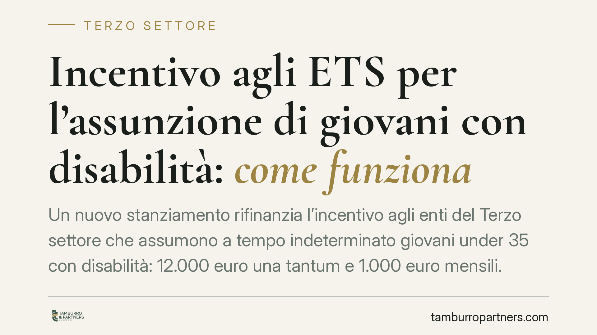

Incentivo agli ETS per l'assunzione di giovani con disabilità: come funziona
Un nuovo stanziamento rifinanzia l'incentivo agli enti del Terzo settore che assumono a tempo indeterminato giovani under 35 con disabilità: 12.000 euro una tantum e 1.000 euro mensili. La misura è premiale e va oltre il collocamento obbligatorio. Ma i tempi delle domande e il riparto proporzionale delle risorse impongono cautela. Vediamo cosa è certo e cosa va verificato sulla fonte ufficiale.

Il quadro della misura
È stato rifinanziato l'incentivo destinato agli enti del Terzo settore (ETS) che assumono a tempo indeterminato giovani con disabilità di età inferiore ai 35 anni. L'importo comunicato è duplice: un contributo una tantum di 12.000 euro per ciascuna assunzione, cui si aggiunge un contributo mensile di 1.000 euro. La dotazione riferita è di 25 milioni di euro.
Si tratta di un beneficio a carattere premiale: non è la contropartita di un obbligo, ma un incentivo che si affianca alla scelta volontaria dell'ente di assumere stabilmente lavoratori appartenenti a categorie tutelate.
Inquadramento normativo: cosa è certo e cosa verificare
La misura si colloca nel solco degli interventi introdotti dalla legge di bilancio 2024, la legge 30 dicembre 2023, n. 213. È a questa fonte primaria, e non al d.l. 48/2023 (decreto lavoro) — che disciplina materie diverse — che va ricondotto l'incentivo per gli ETS che assumono under 35 con disabilità.
Un punto va detto con franchezza: l'individuazione dell'esatto articolo e comma istitutivo, nonché gli estremi completi del decreto ministeriale di rifinanziamento (data, eventuale numero e pubblicazione in Gazzetta Ufficiale), devono essere riscontrati sul testo ufficiale prima di ogni scelta operativa. Allo stesso modo, il termine per la presentazione delle domande e la data finale del contributo mensile sono fissati dal decreto attuativo: vanno letti direttamente nel provvedimento, perché indicazioni generiche come «entro fine anno» non offrono certezza sufficiente per pianificare un'assunzione.
Il rapporto con il collocamento mirato
L'incentivo non va confuso con gli obblighi di assunzione previsti dalla legge 12 marzo 1999, n. 68 sul collocamento mirato dei disabili. La legge 68/1999 impone quote di riserva ai datori di lavoro che superano determinate soglie dimensionali; il contributo qui esaminato, invece, premia l'assunzione a prescindere dal fatto che essa soddisfi o meno un obbligo di legge.
Questo significa che un ETS può, in linea di principio, beneficiare dell'incentivo anche per assunzioni ulteriori rispetto alla quota d'obbligo. L'eventuale cumulabilità con altri incentivi — e i suoi limiti — è però tema da verificare puntualmente nel decreto e nelle regole generali sul cumulo degli aiuti: non va data per scontata.
Cosa cambia per gli enti
Due elementi strutturali meritano attenzione, perché condizionano la reale convenienza della misura.
Il primo è la temporaneità del contributo mensile. L'assunzione richiesta è a tempo indeterminato, ma il sostegno economico ha una durata predefinita. L'ente deve quindi valutare la sostenibilità del rapporto di lavoro oltre il periodo di contribuzione: quando il contributo mensile cessa, il costo del lavoratore ricade interamente sul bilancio dell'ente. Una cessazione anticipata del rapporto, inoltre, può comportare la revoca o il recupero delle somme percepite.
Il secondo è il riparto proporzionale delle risorse. Con una dotazione a tetto chiuso e domande potenzialmente superiori al finanziamento disponibile, il contributo effettivo può risultare ridotto rispetto agli importi nominali. Chi programma l'assunzione contando sull'intera cifra rischia di ricevere meno: prudenza vuole che il piano finanziario regga anche in caso di erogazione parziale.
Sul piano soggettivo, condizione imprescindibile è l'iscrizione al Registro Unico Nazionale del Terzo Settore (RUNTS). Senza tale iscrizione l'ente non rientra tra i beneficiari.
Cosa fare in concreto
- Verificate l'iscrizione al RUNTS e la sua regolarità prima di avviare qualsiasi pratica: è la condizione di accesso all'incentivo.
- Leggete il decreto attuativo sulla fonte ufficiale per individuare termine esatto delle domande, data finale del contributo mensile e modulistica: non affidatevi a scadenze indicate in modo generico.
- Pianificate la sostenibilità oltre il periodo di contribuzione, valutando il costo pieno del lavoratore una volta esaurito il sostegno mensile.
- Ipotizzate uno scenario di erogazione ridotta per effetto del riparto proporzionale e verificate la tenuta del bilancio anche in quel caso.
- Documentate la stabilità del rapporto, poiché la cessazione anticipata può determinare revoca o recupero delle somme.
Consigliamo di far precedere la domanda da una verifica congiunta dei presupposti soggettivi, dei termini e della compatibilità con altri eventuali incentivi già in godimento.
Disclaimer
Contributo informativo a cura di Tamburro & Partners - Avv. Giuseppe Tamburro. Non costituisce parere legale.
Ogni ente del terzo settore ha la sua storia.
Se rappresenti un ETS e vuoi un confronto su governance, RUNTS o fiscalità, scrivi allo studio. Ti rispondiamo entro un giorno lavorativo.